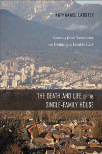

<body bgcolor="#FFFFFF" text="#000000" link="#0000FF" vlink="#CC0000" alink="#CC0000"><center><hr width="350" size="1" align="center" noshade>A detailed study of how Vancouver moved away from the single-family house and the effects of this transformation, detailed by interviews with residents<hr width="350" size="1" align="center" noshade><p><a href="https://cdcshoppingcart.uchicago.edu/Cart/ChicagoBook.aspx?ISBN=&&PRESS=temple" target="_top">Buy this book!</a> | <a href="https://cdcshoppingcart.uchicago.edu/Cart/Cart.aspx?PRESS=temple" target="_top">View Cart</a> | <a href="https://cdcshoppingcart.uchicago.edu/Cart/Cart.aspx?PRESS=temple" target="_top">Check Out</a></p><p></p></center><!--none//--><h1 class = "booktitle">The Death and Life of the Single-Family House
</h1> <h1 class = "subtitle">Lessons from Vancouver on Building a Livable City</h1>
<h3>Nathanael Lauster </h3>
paper: $34.95, Oct 16<BR>EAN:&nbsp;978-1-4399-1394-9<BR><font color=#990033>Available</FONT><font size=-7><br>&nbsp;</font></p><p class="info">cloth: $94.50, Oct 16<BR>EAN:&nbsp;978-1-4399-1393-2<BR><font color=#990033>Available</FONT><font size=-7><br>&nbsp;</font></p><p class="info">e-book: $34.95, Oct 16<BR>EAN:&nbsp;978-1-4399-1395-6<BR><font color=#990033>Available</FONT><font size=-7><br>&nbsp;</font></p></p></td></tr></table>
<BR> <p class="info">262 pp<BR> 6 x 9<BR> 7 tables, 11 figs., 4 halftones, 6 maps <p class="info"><font size=-7>&nbsp;</font></p><p class="info">
</P><BLOCKQUOTE><p>" <i>In this ingenious study of the predicament of single-family housing, Nathanael Lauster dissects the root of the problem: the complex psychology of the single-family lifestyle. What's really behind the seeming preference for the detached home, and is it valid? Diving deeply, Lauster unravels the cognitive dissonance of the ‘house habit' and convincingly demonstrates how the single-family house-while on the surface appearing to offer solutions to urban problems-in reality causes more trouble than it's worth. The hopeful message Lauster offers is that even the most house-oriented resident can reinterpret what urban dwelling means and successfully kick the single-family habit</i>."<br/>-<b>Emily Talen</b>, Professor of Urbanism at the University of Chicago and author of <i>City Rules: How Regulations Affect Urban Form</i><br>
</BLOCKQUOTE>
<p>Vancouver today is recognized as one of the most livable cities in the world as well as an international model for sustainability and urbanism. Single-family homes in this city are "a dying breed." Most people live in the various low-rise and high-rise urban alternatives throughout the metropolitan area.<br/><br/> <i>The Death and Life of the Single-Family House</i> explains how residents in Vancouver attempt to make themselves at home without a house. Local sociologist Nathanael Lauster has painstakingly studied the city's dramatic transformation to curb sprawl. He tracks the history of housing and interviews residents about the cultural importance of the house as well as the urban problems it once appeared to solve.<br/><br/>Although Vancouver's built environment is unique, Lauster argues that it was never predestined by geography or demography. Instead, regulatory transformations enabled the city to renovate, build over, and build around the house. Moreover, he insists, there are lessons here for the rest of North America. We can start building our cities differently, and without sacrificing their livability.<br>
<P CLASS="top"><A HREF="#top">BACK TO TOP</A></P>&nbsp;<h2 class="inpageheading"><A NAME="excerpt"></a>Excerpt</h2><p><a href="http://www.temple.edu/tempress/chapters_2400/2418_ch1.pdf"> Read the Introduction (pdf). </a><br>
<P CLASS="top"><A HREF="#top">BACK TO TOP</A></P>
<BR>&nbsp;
<h2 class="inpageheading"><A NAME="reviews"></a>Reviews</h2>
<p>"The Death and Life of the Single-Family House <i>forcefully critiques the detached home as a dysfunctional urban habitat with unacceptable costs-social, environmental, and financial-and envisions positive alternatives for families and communities. Lauster's argument is based on a case study of Vancouver, whose remarkable transformation he attributes primarily to governance, offering hope that other cities can also shift course. Extensive archival work is complemented by interviews with Vancouver residents on their interpretations of home. This original and well-written book is important reading for anyone interested in urban studies, environmental sustainability, and cultural and economic sociology</i>."<br/>-<b>Jane Zavisca</b>, Associate Professor of Sociology at the University of Arizona and author of <i>Housing the New Russia</i><br>
<p>" <i>With a variety of excellent historical, sociological, and firsthand interview data, Lauster shows why people, especially families with children, continue to idealize and pursue the single-family detached house. Written in a fluid and accessible style, this book addresses what is not only a very pressing policy issue but also a very personal issue for many people.</i> The Death and Life of the Single-Family House <i>makes a significant contribution to urban studies and will have influence in areas well beyond urban studies research.</i>"<br/>-<b>Mariana Valverde</b>, Professor of Criminology at the University of Toronto and author of <i>Everyday Law on the Street: City Governance in an Age of Diversity</i><br>
<p><i>"Lauster examines how one Canadian city has undergone a dramatic transformation to curb sprawl.... (The book) is an important contribution to urban studies particularly in terms of its head-on challenge to our 'house habit' and the cognitive dissonance in which this is embedded. In this respect, it resonates throughout North America, far beyond the careful case study in which it is grounded</i>."<br/>-<b><i>The New York Journal of Books</i></b><br>
<p><i>"</i><i>While the book is based on a case study of Vancouver, it will have resonance with other cities facing housing affordability challenges. There are lessons in this book for the rest of North America on how cities can be built differently, without sacrificing their livability. </i>The Death and Life of the Single Family House <i> is a unique and important contribution to the urbanist canon, and is an important read for civic historians, city planners and urban sociologists, alike.</i><i>" <br/>--</i><b><i>Spacing Vancouver</i></b><br>
<P CLASS="top"><A HREF="#top">BACK TO TOP</A></P>&nbsp;<P>
<h2 class="inpageheading"><A NAME="contents"></a>Contents</h2><P><span style="font-family: 'Verdana';font-size: 13px;" >List of Figures and Tables<br/>Acknowledgments<br/><br/>Introduction<br/>1. What's a House?<br/>2. What's the Problem?<br/>3. Bringing the House to Life in Vancouver<br/>4. The Death of the House in Vancouver?<br/>5. Inhabiting the Greenest City<br/>6. What Do Houses Do Best?<br/>7. At Home in the City<br/>8. Habitat for Diversity<br/><br/>Appendix: Data and Methods<br/>References<br/>Index</span></P>
<P CLASS="top"><A HREF="#top">BACK TO TOP</A></P>
</P><BR>&nbsp;
<H2 class="inpageheading"><A NAME="author bio"></a>About the Author(s)</H2><p><b>Nathanael Lauster</b> is an Associate Professor of Sociology at the University of British Columbia. He is the co-editor (with Graham Allan) of <i>The End of Children?: Changing Trends in Childbearing and Childhood.</i><br>
<P CLASS="top"><A HREF="#top">BACK TO TOP</A></P>
<p><h2 class="inpageheading"><a name="subjects"></a>Subject Categories</h2> <p><a href="http://www.temple.edu/tempress/urban.html" target="_top">Urban Studies</a> <br><a href="http://www.temple.edu/tempress/political.html" target="_top">Political Science and Public Policy</a> <br><a href="http://www.temple.edu/tempress/sociology.html" target="_top">Sociology</a> <br><a href="http://www.temple.edu/tempress/history.html" target="_top">History</a> <br><a href="" target="_top"></a> </p>
</p>
<P>
<h2 class="inpageheading">In the Series</h2>�
<p>�<a target="_top" href="http://www.temple.edu/tempress/urban_life.html" OnMouseOver="window.status='Click for other books in this series!';return true;"OnMouseOut="window.status=" ><i>Urban Life, Landscape, and Policy</i></a></P>
<p><p>
The <em>Urban Life, Landscape, and Policy</em> Series, edited by David Stradling, Larry Bennett, and Davarian Baldwin, was founded by the late Zane L. Miller to publish books that examine past and contemporary cities, focusing on cultural and social issues. The editors seek proposals that analyze processes of urban change relevant to the future of cities and their metropolitan regions, and that examine urban and regional planning, environmental issues, and urban policy studies, thus contributing to ongoing debates.
</p></P>
�</P>��
</P>
<p align="center"><a href="https://cdcshoppingcart.uchicago.edu/Cart/ChicagoBook.aspx?ISBN=&&PRESS=temple" target="_top">Buy this book!</a> | <a href="https://cdcshoppingcart.uchicago.edu/Cart/Cart.aspx?PRESS=temple" target="_top">View Cart</a> | <a href="https://cdcshoppingcart.uchicago.edu/Cart/Cart.aspx?PRESS=temple" target="_top">Check Out</a></p><p><font face="Arial" size="1"><a href="copyright.html" onMouseOver="window.status='Web Copyright Policy';return true;" onMouseOut="window.status=''" title="Web Copyright Policy">&copy;</a> 2016 <a href="http://www.temple.edu" target="new" onMouseOver="window.status='Link to Temple University home page';return true;" onMouseOut="window.status=''" title="Link to Temple University home page">Temple University</a>. All Rights Reserved. http://www.temple.edu/tempress/titles/2418_reg.html</font></p>